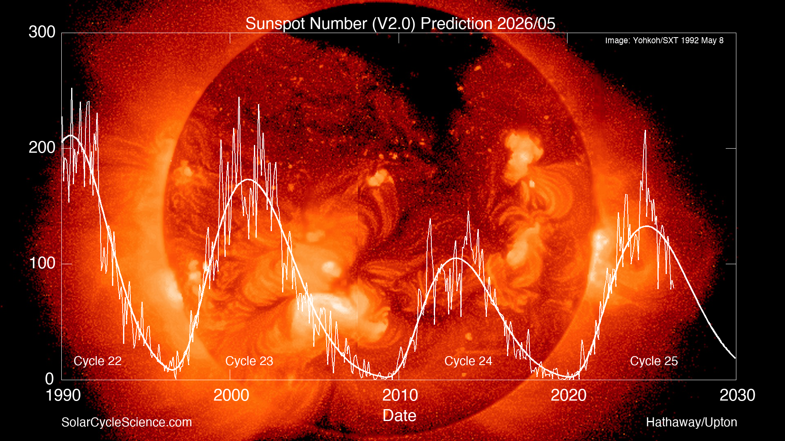
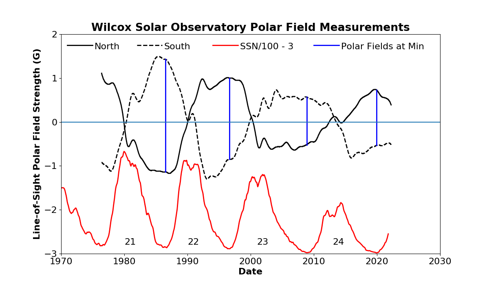
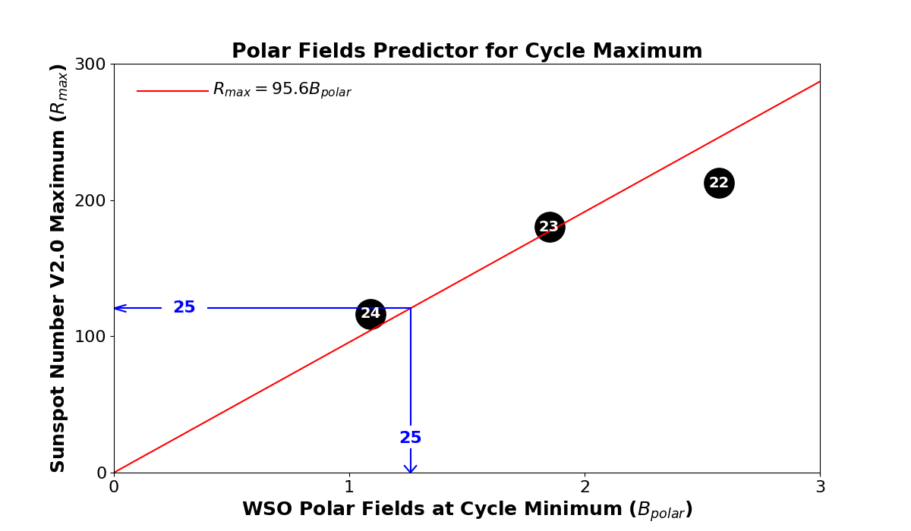
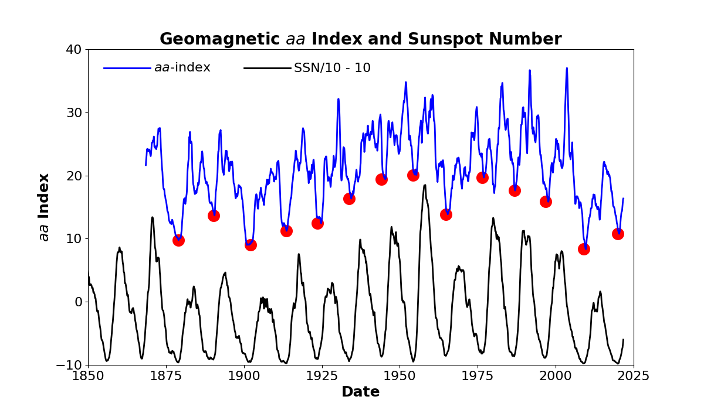
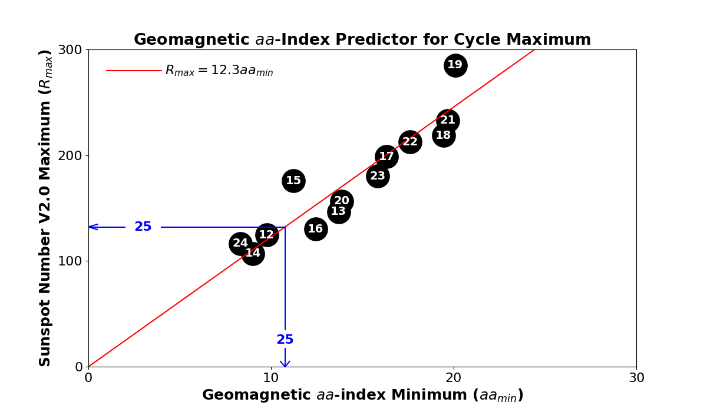
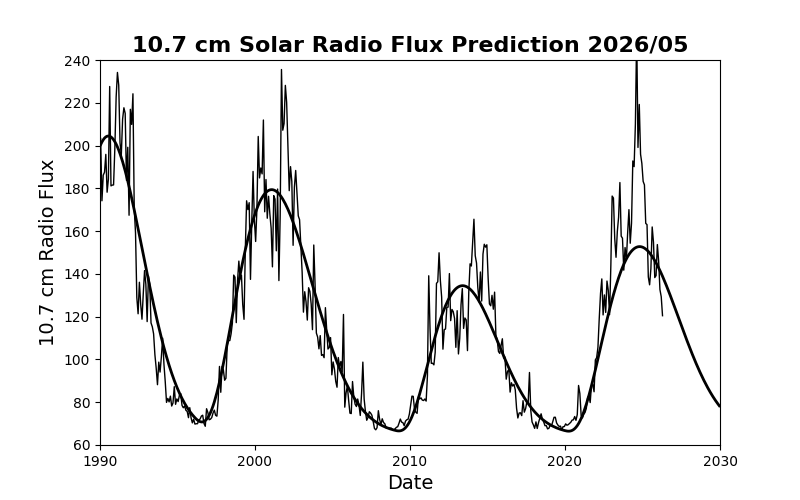
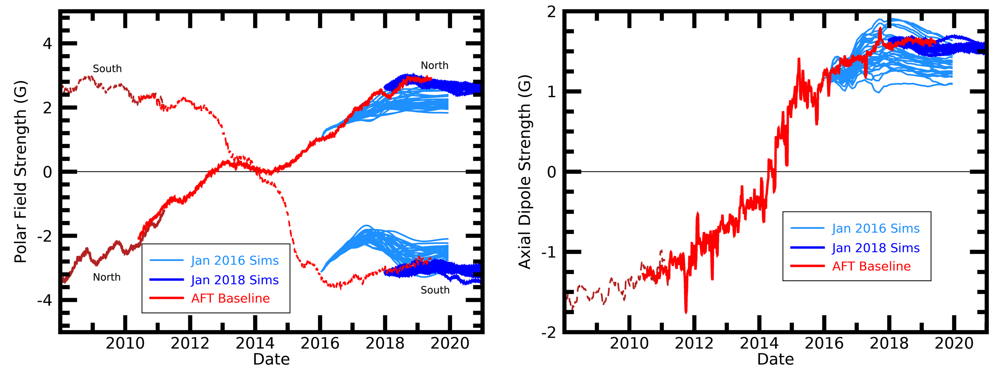

Cycle 25 Space Weather
Solar Cycle Predictions
Tracking the progress and decline of Solar Cycle 25 using curve-fitting and physical precursor methods.
The maximum of Solar Cycle 25 has been established at a smoothed sunspot number of 160.8 in October 2024. Now that we are years into the cycle, curve-fitting models have become highly reliable, backed by precursor methods such as geomagnetic activity indices and polar magnetic field strengths at solar minimum.
Sunspot Number Prediction
Our curve-fitting method, anchored by papers from Hathaway, Wilson, and Reichmann (1994, 1999), indicates that Cycle 25 is larger than Cycle 24 but remains smaller than Cycle 23, making it a relatively average-sized cycle.
This is in excellent agreement with both polar field and geomagnetic precursors (detailed below).

Sunspot Prediction: Plot showing observed sunspot numbers and the curve-fitted predictions for Cycle 25.
Precursor Forecasting Methods
Physically-grounded precursors measured during solar minimum offer the earliest and most robust predictions.
1. Polar Fields Precursor
The Sun's polar field strength at minimum is the most reliable precursor for the following cycle's peak. Data from the Wilcox Solar Observatory (WSO) indicates a maximum sunspot number of 120 for Cycle 25, based on the polar fields measured in December 2019.


2. Geomagnetic aa-Index Precursor
Geomagnetic activity near cycle minimum (first observed by Ohl in 1966) correlates strongly with cycle amplitude. The minimum in the geomagnetic aa-index around the Cycle 24/25 minimum indicates a maximum sunspot number of 132 for Cycle 25.


F10.7 Radio Flux Prediction
The solar radio flux at 10.7 cm wavelength (2.8 GHz) is a key metric for upper atmosphere density and satellite drag calculations, following solar ultraviolet changes closer than sunspot counts.
AFT and curve-fitting models predict F10.7 radio flux through the decline of Cycle 25.

F10.7 Flux Forecast: Predictions for Solar Cycles 24 and 25 radio flux compared to observations.
Historical Performance: Cycles 24 & 25
Cycle 24 Polar Predictions
In 2016, we utilized our AFT model to project the polar field buildup at the 2020 minimum. 32 realizations incorporating stochastic variations in convection and Joy's Law tilt correctly predicted that the Cycle 24/25 minimum would feature polar strengths similar to the previous cycle.

2016 Model Ensemble: Variations in convection profiles (left) and Joy's Law tilt (right) showing high consistency in polar predictions.
2018 Performance Review
In 2019, we updated our AFT simulations. Subsequent observations tracked in red (both polar fields above 55° and axial dipole moment) stayed in close alignment with the dark blue AFT prediction envelopes.

Observed vs Simulated (2018): Comparison plotting actual polar field observations (red) against model runs.